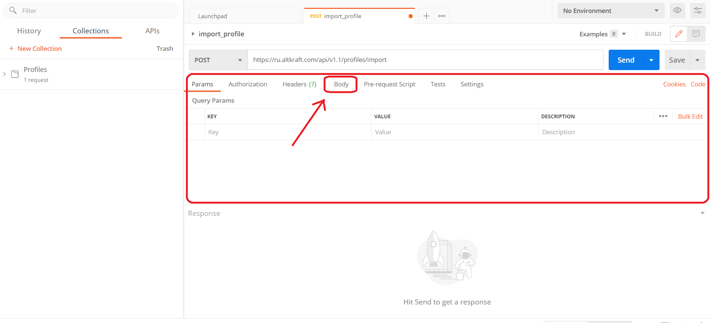
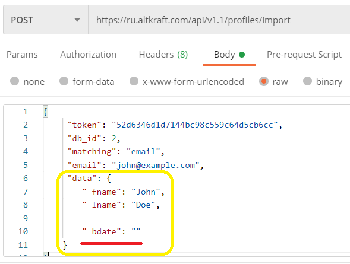

1. Создать новый запрос
После запуска программы “Postman” в левом верхнему углу экрана вы увидите кнопку NEW.
Нажмите на нее и в открывшемся окне выберите Request, или Запрос.
Далее Postman предложит указать имя запроса. Здесь все остается на ваше усмотрение. Мы же пока назовем его import_profile.
Спустившись чуть ниже, мы обнаружим поле Request Description, или Описание запроса. Дайте краткое описание запроса. Это сделает жизнь людей, которые работают с вами в одной команде, проще. В противном случае, оставьте его пустым.
Последнее поле в данном окне — это выбор коллекции. Коллекции создаются, если вам нужно часто повторять одни и те же запросы с определенными параметрами. Если у вас еще не создана подходящая коллекция, то сейчас самое время создать ее.
Нажмите Create Collection (Создать коллекцию), введите название коллекции, например, “Profiles”. Можно также указать папку, в которую хотите сохранить запрос. После этого нажмите галочку или Enter.
Кликните на кнопку Save to Profiles. Так вы сохраните свой запрос в данной коллекции.

Итак, мы создали запрос. Теперь необходимо его настроить.
2. Указать метод и URL-адрес
Для начала укажем метод запроса. Кликните на кнопку GET и в выпадающем списке выберите необходимый метод. В нашем случае это — POST.
В центральном поле с текстом “Enter request URL” вам надо указать адрес API, на который
вы хотите послать запрос.
Укажем: https://ru.altkraft.com/api/v1.1/profiles/import.
Спускаемся в панель ниже.
3. Заполнить тело запроса
Переходим на вкладку Body, или Тело запроса. Здесь указываем данные, которые необходимо отправить с запросом.

Но прежде, чем это сделать, надо выбрать тип отправляемых данных. Мы укажем тип данных — raw.
Кроме того, здесь можно выбрать формат запроса. По умолчанию выбран формат Text. Нам потребуется поменять формат. Кликните на поле Text и выберите JSON-формат в выпадающем списке.

Теперь приступим к заполнению тела запроса.
Тело нашего запроса будет состоять из JSON-объекта. Объекты JSON записываются в виде пар «ключ: значение».
Например, ключ "token" и его свойство "52d6346d1d7144bc98c559c64d5cb6cc" будут
записаны как:
"token": "52d6346d1d7144bc98c559c64d5cb6cc".
Именно в таком формате нам необходимо ввести данные профиля, которые мы хотим импортировать в базу данных.
Следует помнить, что JSON-объекты определяются внутри фигурных скобок { }. Таким образом, тело нашего запроса будет иметь следующий вид:
{
"token": "52d6346d1d7144bc98c559c64d5cb6cc",
"db_id": 2,
"matching": "email",
"email": "john@example.com",
"data": {
"_fname": "John",
"_lname": "Doe",
"_bdate": ""
}
}
Скопируйте этот код и вставьте его в тело запроса.

Сейчас мы указали лишь малую часть возможных данных профиля. Чтобы узнать, какую еще информацию можно передать в базу данных, перейдите по ссылке: Профиль.
Ниже еще раз показан весь процесс работы со вкладкой Body.
4. Написать Pre-request Script
После заполнения тела запроса необходимо перейти на соседнюю вкладку “Pre-request Script”, или Предварительные скрипты. Pre-request Script используется для проведения дополнительных операций перед отправлением запроса.

В нашем JSON-объекте есть объект “data”, который состоит из трех пар "ключ: значение". Нам нужен только один ключ — “_bdate”, поскольку мы хотим изменить его значение таким образом, чтобы в нем сохранялась текущая дата минус 20 лет.

Для этого потребуется создать переменную окружения в Pre-request Script. Скопируйте следующий код и вставьте его в окошко Pre-request Script.
let moment = require('moment');
let string = moment().format();
let year = parseInt(string.slice(0, 4)) - 20;
let currentDateMinusTwentyYears = year + '' + string.slice(4);
pm.variables.set("_bdate_changed", currentDateMinusTwentyYears);
В этом коде мы создали переменную окружения “_bdate_changed”. Теперь каждый раз при отправке запроса данная переменная будет сохранять текущую дату, но на 20 лет раньше.
Внесем эту переменную в тело запроса.
Для это возвращаемся на вкладку Body. Ищем объект “data”, а у него свойство — “_bdate”. Удаляем предыдущее значение этого свойства и вставляем переменную “_bdate_changed”. Переменная окружения в программе Postman всегда заключается не только в кавычки, но и в фигурные скобки. Вот так: “{{_bdate_changed}}” .

Теперь при отправке запроса значение свойства “_bdate” будет изменяться в зависимости от текущей даты.
5. Отправить запрос
Возвращаемся в верхнюю панель и кликаем синюю кнопку SEND, чтобы отправить запрос.
В самой нижней панели можно увидеть ответ запроса.
Если напротив поля “error_text” вы видите значение: “Successful operation”, значит, профиль клиента успешно импортирован в базу данных Altkraft Marketing. Поздравляем!
В противном случае, вы где-то допустили ошибку. Пожалуйста, проверьте еще раз правильность введенных данных.